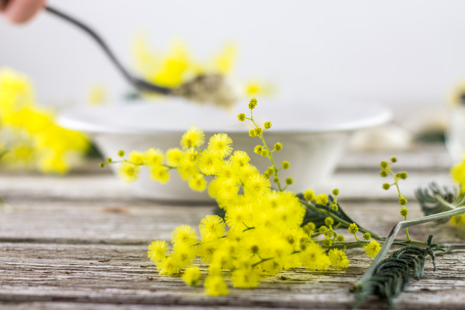
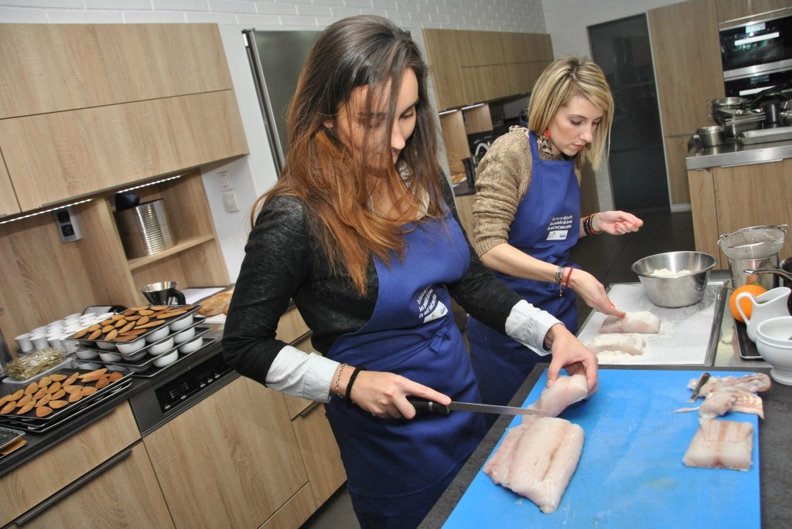
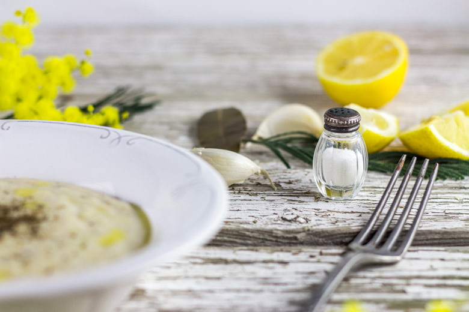
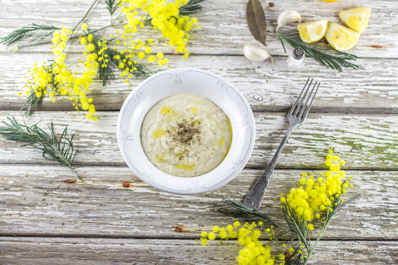
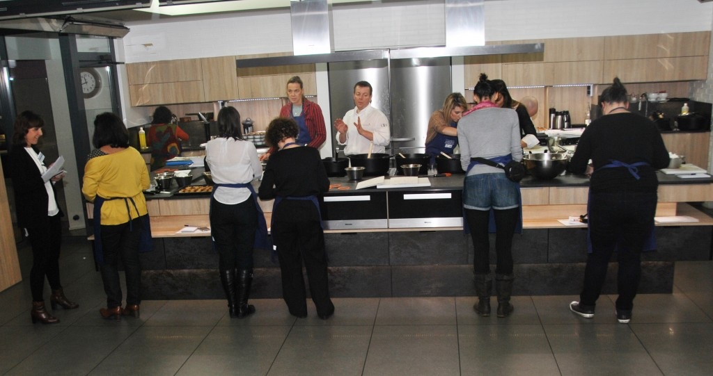

Brandade de morue façon Alain Ducasse

Ici vous trouverez la recette de la brandade de morue comme j’ai eu l’occasion de la cuisiner dans les cuisines d’Alain Ducasse.
Il y a quelque temps de ça j’ai eu la chance de remporter mon premier concours culinaire organisé par France Agrimer avec mon burger marin (j’étais la première surprise et quelle surprise!!!) Parmi les lots que j’ai pu remporter, il y avait entre autres un cours de cuisine mais pas n’importe lequel! En effet, j’ai eu la grande chance de partir à Paris le temps d’une journée pour me rendre à l’école de cuisine d’Alain Ducasse! Waoooooouh quel (grand) privilège! J’y ai rencontré des filles adorables et j’y ai surtout appris beaucoup de petites techniques dont je ne soupçonnais pas l’existence… Durant cette journée placée sous le signe des « fingers food » nous avons cuisiné du poisson que nous avons ensuite servi lors du cocktail organisé pour France Agrimer. Ma coéquipière et moi avions en charge la préparation de la brandade de morue pendant que les autres préparés entre autres un tartare de bonite, des filets de rougets à la tapenade ou encore une bisque de homard!
J’avais très envie de refaire cette brandade de morue une fois à la maison mais en version plat cette fois-ci et j’aurais dû le faire plus tôt car nous nous sommes régalés à tel point que mes espoirs qu’il y ait des restes pour le lendemain se sont rapidement envolés…
Originaire de Nîmes, la brandade est un plat à base de morue, d’huile d’olive, de pommes de terre et d’ail auquel on peut y ajouter du citron et quelques herbes aromatiques selon la saison. Je vous présente ici une façon de la cuisiner et j’espère que cette nouvelle recette vous plaira !
Mmmh ça sent bon!!!
Ingrédients
- Dos de cabillaud - 1kg
- Sel - 100g
- Sucre - 20g
- Pomme de terre charlotte - 8 pièces moyennes
- Lait entier - 750 ml
- Crème liquide 35% - 750 ml
- Ail - 4 grosses gousse
- Thym - 1 branche
- Laurier - 1 feuille
- Citron jaune - 1/2
- Huile d'olive - 80 ml
- Sel, poivre
Instructions
- Ôter les arêtes et la peau du cabillaud
- Découper en pavés
- Mélanger le sel et le sucre
- Recouvrir les pavés de cabillaud du mélange sel/sucre
- Laisser mariner 20 à 30 minutes
- Rincer et sécher sur un linge propre
- Laver, éplucher et couper les pommes de terre en gros dés. Ne les rincez pas
- Réunir dans une cocotte le lait, la crème, les pommes de terre, l'ail en chemise, le thym, le laurier, saler, poivrer et cuire à frémissement en veillant à obtenir simultanément la cuisson fondante des pommes de terre et la réduction du liquide
- Ôter l'ail, le thym, le laurier et écraser grossièrement les pommes de terre à l'aide d'une fourchette
- Aouter les tranches de cabillaud et mélanger délicatement
- Cuire à feu doux pendant 5 bonnes minutes
- Passer au mixeur en ajoutant l'huile d'olive progressivement (personnellement j'évite le mixeur pour garder quelques morceaux de pommes de terre dans ma brandade)
- Ajouter le jus de citron, saler poivrer
- Servir aussitôt





Les tips de la communauté
Recette source de débat passionné sur la dénomination correcte. L'auteure reconnaît qu'il s'agit d'une brandade parmentière et non d'une vraie brandade (sans pommes de terre). Plusieurs commentaires critiques concernent également les cheveux non attachés sur les photos. Malgré la controverse, un lecteur qui a testé la recette la confirme délicieuse et appréciée par toute la famille.
Astuces
- La morue (cabillaud salé) doit cuire dans le lait pour l'onctuosité
- Cette version avec pommes de terre crée une texture plus riche
Variantes suggérées
- Alain Ducasse me tente terriblement maintenant 🙂
Ajustements signalés
- Il s'agit techniquement d'une brandade parmentière (avec pommes de terre) et non d'une vraie brandade
- Pour une vraie brandade, omettre les pommes de terre